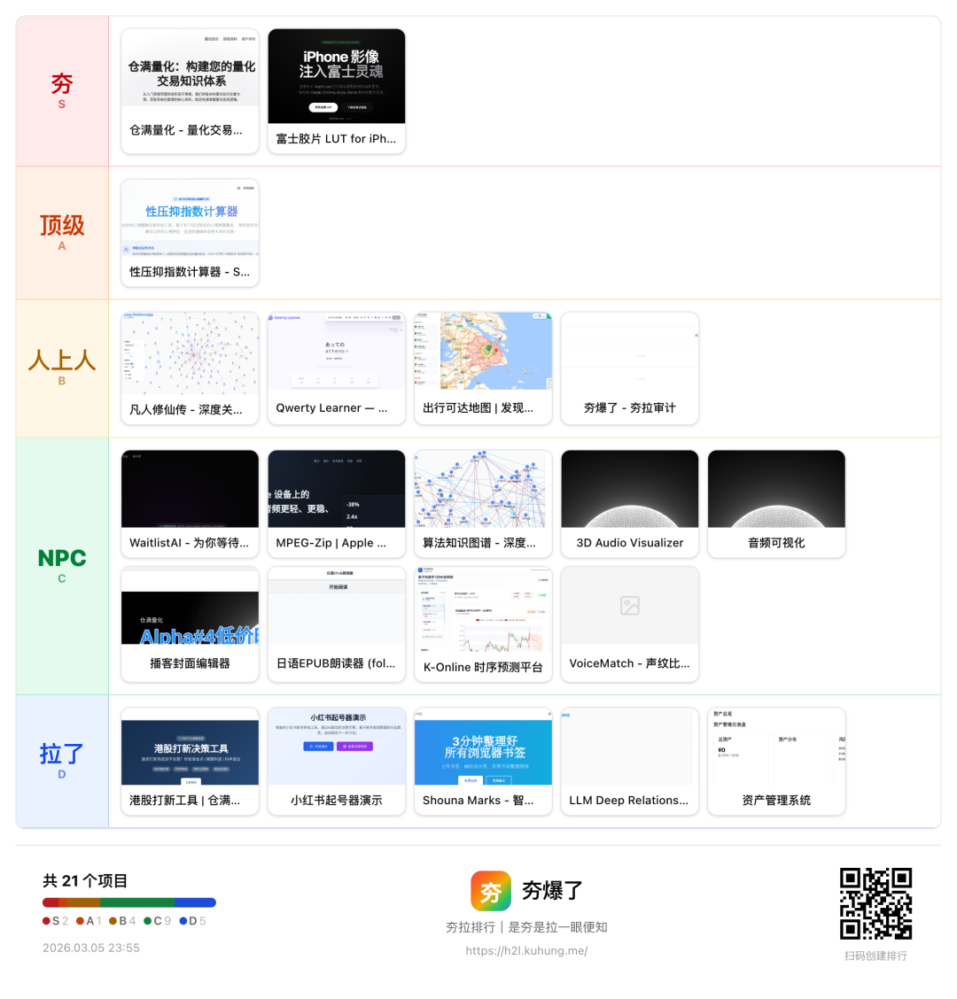

最夯：实打实带来近万访问流量和收入。量化交易与富士胶片。
顶级：蹭热点项目，累计用户30w+。性压抑测试。
人上人：对于其他人确认有用，用起来也顺手。凡人修仙关系图、tap打字练习、以及可达出行和夯拉复盘，
NPC：做了但是没怎么宣发或者做出来差点儿意思。waitlistAI、iPhone音频压缩、声纹在线比对、知识图谱、声音可视化、自媒体封面编辑器、日语Epub阅读器（带朗读）、时序预测。
拉了：定位不清晰、重复造轮子。港股打新工具、小红书起号演示、书签整理、资产管理。
总结
好的项目有以下特性：
热点；利它；饱和宣传；CTA号召清晰；边构建边宣传。
坏的项目有以下特点：
路径不清晰，被LLM牵着鼻子开发；重复构建；构建但不宣发。